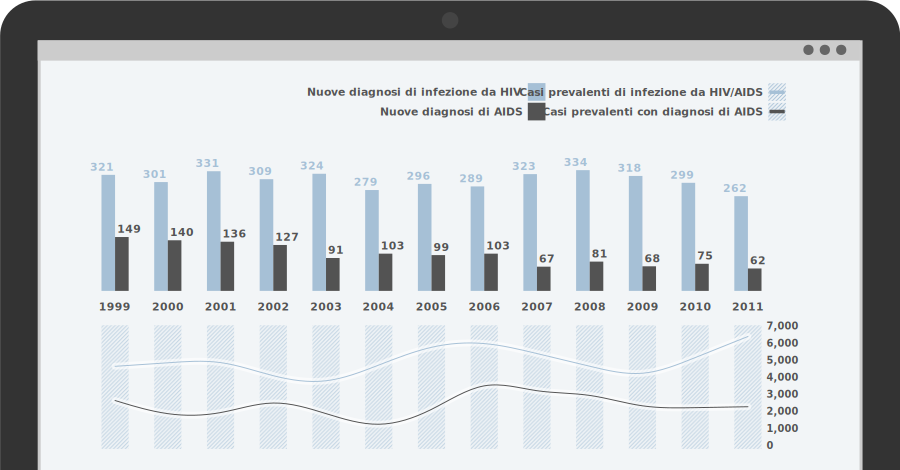

    <article>
      <div class="container">
        <h1>SeREMI</h1>
        <h2>Custom graphical representations of epidemiological data.</h2>
        <p>
          <a href="http://seremi.stage-zadig2.it/">SSepi-SeREMI</a> is part the italian healthcare network and represents a reference for information exchange between epidemiological survey services and the population. Moreover it provides consulting and education activities in order to organize local prevention strategies and to realize quantitative epidemiological studies.
        </p>
        <p>
          The project has been requested by the <a href="http://seremi.stage-zadig2.it/">SSepi-SeREMI</a> epidemiology service and the <a href="http://en.zadig.it/">Zadig</a> editorial company. It has been developed in collaboration with Sergio Cima (Zadig) and <a href="http://www.demade.net/">Studio Demade</a>.
        </p>
        <p>
          Visit <a href="http://seremi.it/">seremi.it</a>.
        </p>
      </div>
      
    </article>